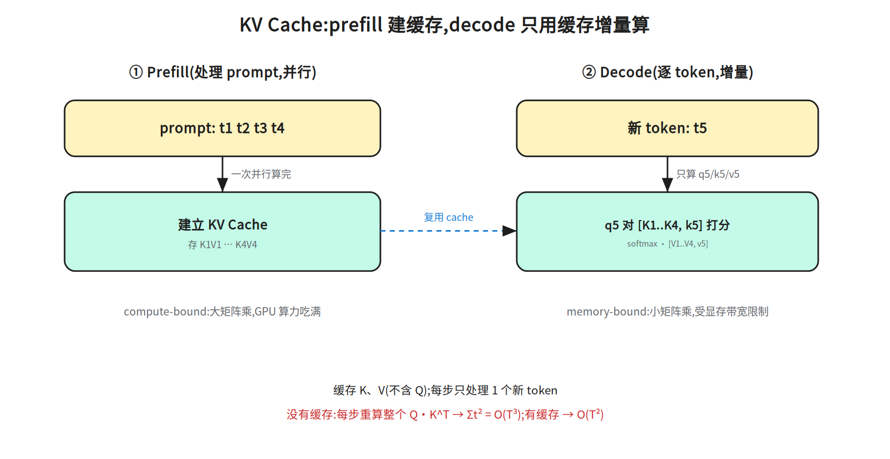
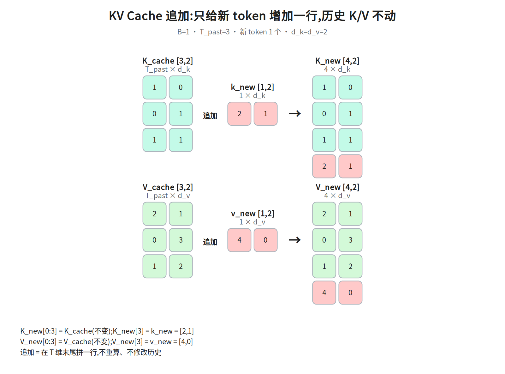
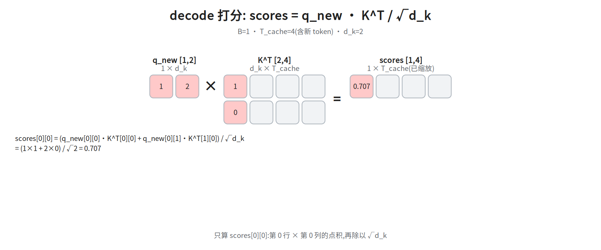
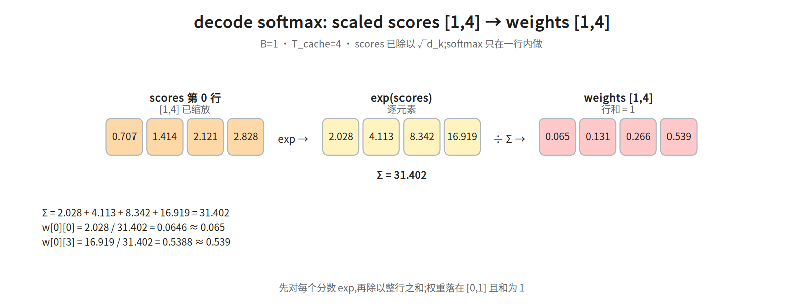
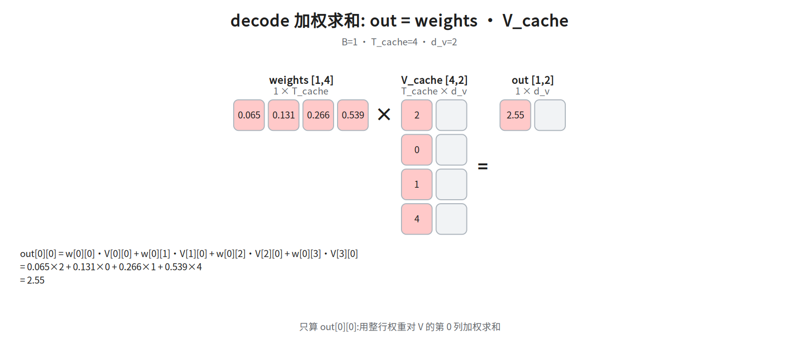

第六层 · 跑起来 —— 训练/推理、KV Cache、完整 forward¶
本层回答:模型怎么训练、怎么推理?为什么推理要 KV Cache?把前面五层串成一次完整的 forward pass。
0. 依赖图(学习顺序)¶
根节点是可以无条件接受的事实;实线箭头表示「前者支撑后者」;虚线不带箭头,表示「同一套结构与网络的两种用法」,不代表学习顺序。学习顺序 = 从根到汇点的拓扑序;但正文的书写顺序与拓扑序不同:§1 先讲训练(H)和 prefill/decode(B),§2 才正式展开自回归(A)(§1 表格里已先用「自回归」「decode」这两个词,先按字面理解即可)——读 §1 时把 H、B 都当成「可以先无条件接受」的起点即可(图里 B 仍有 A→B 入边,这里只是借用「根」的说法,不改变依赖关系),§2 开头那句「训练时的一次并行」说的就是 H。
graph TD
A["自回归:每次只生成一个 token"] --> B["推理分两段<br/>prefill(整段 prompt 一次并行过)+ decode(逐 token)"]
B --> F["完整 forward<br/>embed(词嵌入)→ N×Block(重复 N 层)→ LM Head(投到词表)→ 出词(softmax 后 argmax,即贪心)"]
F --> G["输出下一个 token,循环"]
B --> C["朴素做法:每步重算整个 Q·Kᵀ<br/>生成 T 个 token = O(T³)"]
C --> D["KV Cache<br/>缓存历史 K/V"]
D --> E["每步 O(T),总共 O(T²)"]
E --> F
H["训练:整句并行(§1 先读,正文此时先讲它)"] --> I["一次 forward / backward<br/>O(T²)"]
F -. 同一个网络 .- I1. 训练 vs 推理:两个截然不同的阶段¶
阅读顺序提示:compute-bound / memory-bound 的完整定义在表格下方的「先把这两个词定义掉」,建议先扫一眼那段再回读「计算模式」一行。 一句话先垫住:compute-bound = 矩阵够大、GPU 乘加单元跑满,瓶颈在算力;memory-bound = 算力闲着,时间花在把权重和 KV Cache 从显存搬进计算单元(完整定义仍在下面那段)。
| 训练 | 推理 | |
|---|---|---|
| 输入 | 整段序列(teacher forcing:每个位置喂数据集里的真值,不喂模型上一步自己的输出) | prefill 一次并行喂整段 prompt,decode 逐 token(自回归) |
| attention | 因果掩码,一次并行算所有位置 | prefill 并行算整段(因果掩码);decode 每步只算最新 token |
| 有没有标签 | 有(下一个 token) | 无,自己生成 |
| 计算模式 | 大矩阵乘,compute-bound | prefill 并行整段 → compute-bound;decode 逐 token 小矩阵乘 + 访存 → memory-bound |
| 关键优化 | GPU 利用率、混合精度(fp16/bf16 存权重、fp32 主权重与优化器状态、矩阵乘用 fp32 累加,省的是显存与带宽;与 §5 的推理显存优化(把权重/KV 存成 int8/int4、减少要搬的字节)不是一回事) | KV Cache(§3 才展开;此处只需知道=缓存历史 K/V,避免重算)、批处理、量化 |
训练目标(decoder-only): 下一个 token 预测(next-token prediction)。
补:表里「混合精度 / fp32 主权重 / 优化器状态」是什么。 ①fp16/bf16 存权重:前向/反向的矩阵乘用低精度,省带宽、算得快;②fp32 主权重(master weights):参数更新必须在一份 fp32 副本上做,否则学习率量级的小更新会被 fp16 的精度直接抹掉;③优化器状态:Adam 给每个参数额外存一阶动量 m、二阶动量 v(通常也是 fp32),所以它比权重本身更占显存。 ④fp32 累加:矩阵乘里低精度乘出的结果要送进 fp32 累加器求和,否则数千项的部分和会溢出或丢精度。它与 ② 的 fp32 主权重是两件事(一个是权重的副本,一个是乘加时的累加器);下面 16 字节的账里那 4 字节对应的是主权重,累加器不进模型状态、只占运行时临时显存。粗算每个参数:2(fp16 权重)+2(fp16 梯度)+4(fp32 主权重)+4(m)+4(v) ≈ 16 字节,是纯 fp16 推理权重(2 字节)的 8 倍——这是「训练比推理吃显存」的主因之一。
交叉熵的定义放在本节后面「交叉熵在这里做什么」callout(本层只出现一次完整定义),这里先记一句话:它就是「真实下一个词的负对数概率」。
先把这两个词定义掉(后面 §3、§4、§5 都靠它):compute-bound = 瓶颈在算力,矩阵够大、GPU 的乘加单元跑满;memory-bound = 瓶颈在显存带宽,时间花在把权重和 KV Cache 从显存搬进计算单元,算力闲着。上表「计算模式」一行的差别就是这个,不是两种硬件的差别。
训练 loss 怎么算: 把序列右移一位当标签,对每个位置算交叉熵,再对所有位置取平均后反向传播(平均与求和差一个 1/(B·(T-1)) 的因子(B = batch 大小,即一次 forward 同时处理的序列条数;T-1 是每条序列的有效预测位置数)。这直接影响学习率标定:求和时梯度大小随 B·(T-1) 线性增长,最优 lr 要跟着缩小,所以 batch 或序列长度一变就得重扫 lr;取平均等于把这个因子除掉,是 lr 能跨配置迁移的前提)。
lr(学习率)= 每步沿梯度更新参数的步长,即 w ← w - lr·grad;在 SGD 这一更新式下,梯度整体放大 k 倍与 lr 放大 k 倍对更新量的效果相同,所以跨配置前要先把这个因子除掉(取平均);「重扫 lr」就是在同一份数据上试几档 lr、看验证 loss 挑最优的那一档。
但这个等价只在 SGD 下成立:Adam 的更新是 lr·m̂/(√v̂+eps),梯度整体乘 k 时 m 同比乘 k、v 乘 k²、√v 乘 k,分子分母约掉,更新量几乎不变(只剩 eps 的影响)。前文已把 Adam 的 m/v 定为训练标配,所以「batch 或序列长度一变就得按 B·(T-1) 重扫 lr」这句要按 SGD 口径读;Adam 下改 batch/序列长度主要变的是梯度噪声与有效步数,学习率一般只需小幅微调,不必按因子重扫。因果掩码保证位置 i 的预测只用 ≤i 的信息,所以一次前向能并行算所有位置的 loss。
节点 I 的「backward 也是 O(T²)」怎么来的: 反向传播的 FLOPs 约为前向的 2 倍(每个算子都要算对输入和对权重的梯度),但量级不变——前向里唯一对 T 是二次的只有每层 T×T 的注意力分数矩阵(对 T 是 O(T²·d),二次但不最贵);T·d·d 的投影对 T 只是 O(T)(d 不随序列长度变,属线性项,不参与「二次」那一类);反向逐层复用同规模的矩阵,所以 forward+backward 合起来仍是 O(T²),不额外升阶。但 O(T²) 只是量级上界,不等于二次项占主导:一步训练的 FLOPs ≈ 6 × 参数量 × token 数(每层 T·d·d 的投影与 FFN,对 T 是线性)+ O(T²·d)(注意力)。
把这三个数算出来: 每层线性部分 ≈ 12d² 参数 × 6(前向 2 + 反向 4)× T = 72Td²;每层注意力 = 2 个 T×T×d 矩阵乘(Q·Kᵀ 与 scores·V),前向 4T²d,训练 ≈ 3× 前向 = 12T²d。①两项相等:12T²d = 72Td² → T = 6d,所以 6d 是交叉点、不是「主导点」;②代入 GPT-3 175B(d=12288、96 层、T=4096):注意力 ≈ 96×12T²d ≈ 2.4e14,一次训练步 ≈ 6×1.75e11×4096 ≈ 4.3e15,占比 ≈ 5.5%;③T 翻倍:线性 ×2、注意力 ×4,总 FLOPs ≈ 0.945×2 + 0.055×4 ≈ 2.1 倍。GPT-3 175B(d=12288、96 层)在 T=4096 时注意力只占 5–6%,T 翻倍总耗时约 2.1 倍;而 T = 6d 只是「二次项 = 线性项」的交叉点:此处两项各占一半,T 翻倍总 FLOPs ≈ 0.5×2 + 0.5×4 = 3 倍;要接近 4 倍必须 T ≫ 6d(T ≈ 100d 时才约 3.9 倍),把 6d 当「主导点」会把「T 翻倍→总耗时」高估约 1/3(3 倍被当成接近 4 倍,4/3≈1.33),而不是一倍。
交叉熵在这里做什么: 每个位置的 logits 过 softmax 就是「下一个词是词表里各词的概率」,交叉熵 = 取真实下一个词的负对数概率
-log p(真值),越准越小。 (logits= LM Head 输出、softmax 之前的未归一化分数,形状[B, T, vocab];LM Head 是 §4 第 12 步那个d_model→vocab的线性层。)所以「右移一位当标签 + 逐位置交叉熵」正好等价于在每个位置做 next-token prediction,一次前向并行算出 T-1 个位置的 loss。代码里的vocab就是logits.shape[-1](词表大小);reshape(-1, vocab)把[B, T-1, vocab]摊平成(B·(T-1)) × vocab的行,与标签ids[:, 1:].reshape(-1)的行一一对应。
logits = model(ids) # [B, T, vocab]
vocab = logits.shape[-1] # 词表大小 = 最后一维
loss = F.cross_entropy(
logits[:, :-1].reshape(-1, vocab), # 位置 0..T-2 的预测
ids[:, 1:].reshape(-1)) # 位置 1..T-1 的真实答案
2. 推理为什么慢:自回归的生成本质¶
生成第 t 个 token 要依赖前 t-1 个。所以推理是串行的:算完 token 1 才能算 token 2…… 这和训练时的"一次并行"完全不同。
没有优化时的浪费: 生成第 t 个 token 时,如果把前 t-1 个 token 连同新 token 整个重算一遍,那么第 t 步要重新算整个注意力矩阵 Q·Kᵀ,代价是 O(t²)(t 个 query × t 个 key);从 1 到 T 累加:
所以不缓存时,生成 T 个 token 的注意力量级是 O(T³)——每个历史位置被反复卷入越来越大的矩阵乘,极其浪费。
注意别搞混:
K/V 投影被重复计算本身只值 O(T²);真正把量级推到 O(T³) 的是每一步重算整个Q·Kᵀ矩阵。(面试被追问时,这句要能说清。)
3. KV Cache:推理的核心优化¶

观察: 生成第 t 个 token 时,前 t-1 个 token 的 K 和 V 不会变——它们是各位置上下文表示 h_i = f(x_0…x_i) 的投影,依赖 0..i 的全部 token,只是不依赖其后的 token,所以与后面无关。变的只有新 token 的 Q(以及它的 K、V)。
做法:把每层已经算过的 K、V 缓存起来,新 token 只算自己的 q_new, k_new, v_new,注意力只用:
scores = q_new · [K_cache, k_new]ᵀ / √d_k # 只和缓存的 K、新 K 算,别忘了除以 √d_k
out = softmax(scores) · [V_cache, v_new]
然后把 k_new, v_new 追加进 cache
这样每步只处理1个新 token(增量),避免了重复计算。
- 复杂度: 生成 T 个 token 从
O(T³)降到 O(T²)(每步 O(T),共 T 步)。训练仍是 O(T²)。 - 代价:显存。 每层缓存 2 个张量(K、V),大小:
代个具体数字感受一下(GPT-3 175B 量级:层数=96, 头数=96, d_k=128,FP16 每数 2 字节):
单条序列 T=4096、B=1 时
≈ 2 · 1 · 4096 · 96 · 96 · 128 · 2 ≈ 19.3 GB(≈ 18 GiB)—— 一条 4K 序列的 KV Cache 就要约 18 GiB,
比模型权重(FP16 约 350GB)虽小,但批量一大就爆显存。
长上下文时这一项非常可观——这正是 GQA/MQA(第五层)要砍的东西:GQA 把 头数 从 96 降到 g(如 8),上面这个数字直接缩到约 1/12。
- 前提:被缓存的那些位置的 K/V 不能依赖其后的 token。decoder 自注意力用因果掩码保证这一点,于是常被简写成「必须因果掩码」;但这不是缓存本身的要求:encoder-decoder 的 cross-attention 缓存的正是双向编码器的 K/V(T5、Whisper),prefix-LM(前段双向编码、后段因果生成的混合结构;其前缀部分的 K/V 由双向注意力算出,同样不依赖后文)也缓存双向 prefix——两者都不满足因果掩码,却完全合法。
3.1 数值演算:缓存追加 + decode 单步¶
用 d_k=d_v=2(d_v 是 V 每个头的维度;这里为省事取 d_v=d_k,所以 §3 的显存公式里只出现 · d_k ·;若 d_v≠d_k,要把 §3 公式里前导的 2 · d_k 整体换成 (d_k+d_v),而不是只替换 d_k(前导的 2 已经代表 K、V 两个张量,只换 d_k 会把 K、V 算两遍))、已有 3 个历史 token 的小例子,把 decode 一步拆成四张图。
① 追加 K/V:历史 K_cache [3,2] 末尾拼上新 token 的 k_new [1,2],得到 K_new [4,2];
V 同理。前 3 行完全不变,只多一行。

K_cache=[[1,0],[0,1],[1,1]]、k_new=[2,1] → K_new[3]=[2,1];
V_cache=[[2,1],[0,3],[1,2]]、v_new=[4,0] → V_new[3]=[4,0]。
② decode 打分:q_new=[1,2](括号里是两个具体的数 1 和 2,不是在说「形状是 1×2」;它的形状恰好也是 1×2 的行向量——一个 query 一行,所以下面 scores 是 1×4,scores[0][j] 里的 0 指的就是这一行本身,不是 batch 维)乘 K_new^T [2,4],再除以 √d_k;只示范 scores[0][0](其余三个可自验:(1×0+2×1)/√2=1.414、(1×1+2×1)/√2=2.121、(1×2+2×1)/√2=2.828):

③ 对 scaled scores 做 softmax(只在当前这一行内):

④ 加权求和:weights [1,4] × V_new [4,2],只示范 out[0][0]:

追加后的 V_new 第 0 列为 [2,0,1,4](前 3 个来自 V_cache 第 0 列 [2,0,1],最后一个来自 v_new[0]=4),所以点积正好落在这个 2.55 上。
自回归生成的伪代码:
@torch.no_grad()
def generate(model, prompt_ids, max_new):
cache = None
ids = prompt_ids
step_in = prompt_ids # 首次喂整段 prompt(prefill)
for _ in range(max_new):
logits, cache = model(step_in, cache=cache)
next_id = logits[:, -1].argmax(-1)
ids = torch.cat([ids, next_id[:, None]], dim=1)
step_in = next_id[:, None] # 之后每步只喂新的 1 个 token(decode)
return ids
注意
model内部:首次(filling/prefill)一次处理整段 prompt 并建 cache;后续(decode)每步只喂 1 个新 token。这就是"prefill 阶段 compute-bound、decode 阶段 memory-bound"的由来。
4. 把六层串起来:一次完整 forward(decoder-only)¶
以 "我爱" → 预测下一个字为例,d_model=512, h=8, N=6(原论文 base 就是 512/8/6;512/8/12 与原论文 base(512/8/6)、GPT-2 small(768/12/12)都对不上——「标准配置」没有公认清单,这句只按这两处对照,别读成全称结论;12 层对应的是 GPT-2 small 那种 768/12/12):
注意:只有维度 512/8/6 来自原论文。 下面的列表走的是现代 Pre-LN、decoder-only 结构(RMSNorm、RoPE、SwiGLU、带出口 LN);原论文是 Post-LN 的 encoder-decoder(输出为 LN(x+Sublayer(x))、没有出口 LN、decoder 含 cross-attention、正弦位置编码加在输入端)。两套结构不要按同一份清单去对号。
1. 文本 "我爱"
2. tokenizer → ids [B, T] e.g. [[151, 5287]](仅示意:真实 id 由 tokenizer 决定,中文在 BPE 下常被拆成多个 token,T 通常大于字数;下文 T=2 只是为维度演示好算)
3. Embedding → X [B, T, 512]
4. (仅原论文 Post-LN encoder-decoder 如此:在此 + 正弦位置编码。本列表是 Pre-LN decoder-only,不加到输入——
RoPE 在下面第 6 步的 attention 内部完成)
────────────── 重复 N=6 层 ──────────────
5. LayerNorm(RMSNorm) → [B, T, 512]
6. 多头自注意力(因果掩码 + RoPE) → [B, T, 512]
7. + 残差 → [B, T, 512]
8. LayerNorm
9. 前馈网络(FFN / SwiGLU) → [B, T, 512]
10. + 残差 → [B, T, 512]
────────────────────────────────────────
11. 最后再 LayerNorm(本列表是 Pre-LN,需要;原论文 Post-LN 无此步) → [B, T, 512]
12. LM Head: Linear(d_model → vocab) → logits [B, T, vocab]
13. 取最后位置 → softmax / argmax → 下一个 token
关键维度: 全程主干形状都是 [B, T, d_model],只有最后 LM Head 把它投到词表维度 vocab。LM Head 常与 embedding 矩阵共享权重(weight tying),省参数。
第 13 步的 argmax 与图里说的出词是一回事吗? 代码走的是贪心解码:softmax 出分布后取 argmax(概率最大的那个 token)。真实产品若用温度/top-k/top-p 采样,只需把 argmax 换成按分布抽样,其余流程(KV Cache、prefill/decode)完全不变——本层演示的是贪心版。 第 7、10、11 步的 Pre-LN 接法(列表顺序 LN → 子层 → 加残差本身就是 Pre-LN;唯一容易写错的是把「+ 残差」理解成加到 LN(x) 上,那是错的混合写法): 第 7 步「+ 残差」加的是子层输入 x,不是 LN 之后的值——即
x = x + Attn(LN(x)),残差要跨过 LN 和注意力两个算子;第 10 步同理x = x + FFN(LN(x))。所以正确顺序是「LN → 子层 → 加回 x」(Pre-LN),而「子层 → 加回 x → LN」才是 Post-LN。第 11 步的出口 LN 也不是重复:Pre-LN 里每个 LN 都在残差支路内部,主干这条直通路径从头到尾没有做过归一化,出口必须补一个 LN 把主干数值收回正常尺度再接 LM Head,否则 logits 尺度会随层数漂移。
各阶段名字(面试有用): - Prefill(filling): 处理整段 prompt,一次并行,compute-bound,建立 KV Cache。 - Decode: 逐 token 生成,每步只算 1 个 token,memory-bound(受显存带宽限制,GPU 算力用不满)。
5. 为什么推理是 memory-bound(进阶,理解即可)¶
Decode 每步的矩阵运算很小(就 1 个 token),但要把所有模型权重 + 整个 KV Cache从显存读一遍。瓶颈在显存带宽而非算力。这解释了一堆推理优化:
- 批处理(batching): 一次服务多个请求,把"读权重"的成本摊薄(吞吐↑)。
- 量化: 权重/KV 用 int8/int4,减少要搬的字节数。
- GQA/MQA: 砍 KV Cache 体积。
- 投机解码(speculative decoding): 小模型草稿 + 大模型验证,减少串行步数。
- PagedAttention(vLLM): KV Cache 分页管理,减少碎片、提高显存利用率。
这些是 AI Infra 模块的入口——这里埋点,后续展开。 本节整体不进 §0 的依赖图:它是对 F 之后 decode 阶段的横向优化面,与 §3 的 KV Cache(治分数矩阵/显存)是并列关系,不是先后依赖。
面试要点¶
- 训练和推理的 attention 有什么不同? → 训练一次并行算全序列(因果掩码);推理分 prefill(整段 prompt 一次并行)+ decode(逐 token),decode 靠 KV Cache 增量算。
- KV Cache 是什么、为什么需要? → 缓存历史 K/V,新 token 只算自己的 q/k/v,把生成 T 个 token 从 O(T³) 降到 O(T²)。
- KV Cache 的代价? → 显存 ∝ B·T·层数·KV头数·d_k,长上下文很吃显存 → GQA/MQA。
- KV Cache 和因果掩码是什么关系? → 严格说要求的是「被缓存位置的 K/V 不依赖其后的 token」;decoder 自注意力靠因果掩码满足它,而 cross-attention(T5/Whisper)、prefix-LM 缓存的是双向 K/V,同样合法。
- prefill 和 decode 的区别? → prefill 并行处理 prompt(compute-bound);decode 逐 token(memory-bound)。
- LM Head 是什么?和 embedding 的关系? →
d_model→vocab的线性层;常与 embedding 共享权重。
常见坑¶
- 只有推理需要 KV Cache,训练不需要(训练本来就是整段并行)。
- KV Cache 缓存的是 K 和 V,不含 Q(Q 每步是新算的)。
- 长上下文慢的两大原因要分清:attention 的 O(T²) 计算 + KV Cache 的 O(T) 显存;GQA 治显存,FlashAttention 治的是注意力分数矩阵(每层
T×T)的显存与访存——它分块计算、不把整张T×T分数矩阵写回显存,不减小 KV Cache;KV Cache 能砍的不止 GQA/MQA:GQA/MQA 砍头数(§3),MLA 缓存低秩 latent(第五层),量化把 K/V 存成 int8/int4、减少要搬的字节数(§5)——三条路都在减小 KV Cache;而 GQA 与 FlashAttention 管的是不同的显存。 - 训练 loss 里的 shift:输入
[:-1]对标签[1:],别对错。
相关图¶
13_kv_cache(prefill/decode 与 KV Cache)· 14i_kv_append … 14l_decode_out
(decode 单步的逐步数值)(均在 diagrams/,横竖双版本)
下一步¶
Transformer 六层走完。后续可深入:AI Infra 模块(推理系统、并行策略、算子与编译、KV Cache 与显存管理),或按需回到某层抠细节。